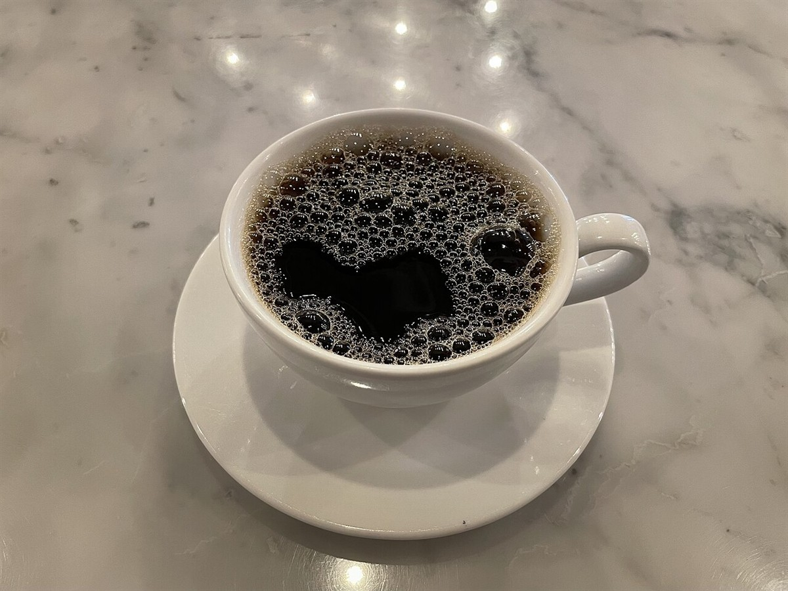
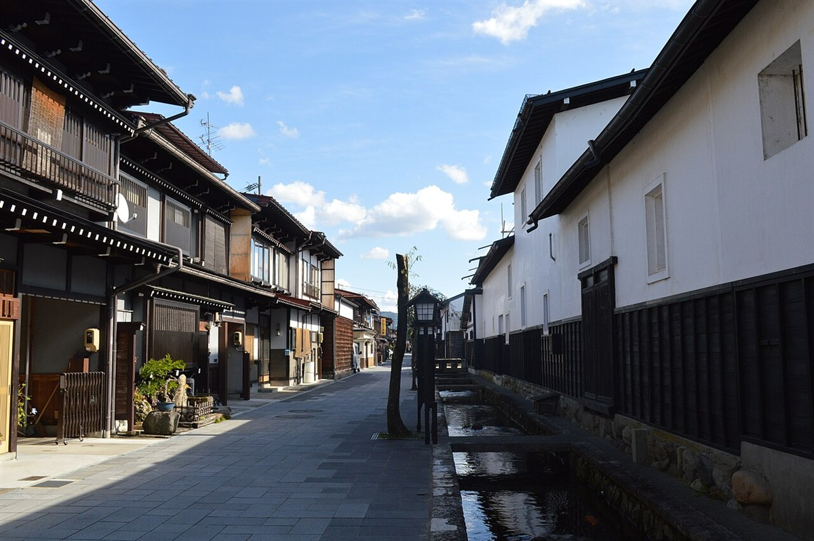

ご連絡はお電話かInstagramで
営業時間などの詳細は準備中です。お電話またはInstagramでご確認ください。
- 営業時間
- 準備中(お問い合わせください)
- 定休日
- 準備中(お問い合わせください)
掲載写真はフリー素材のイメージです。実際の店舗・メニューとは異なります。飛騨市古川町以外の地域で撮影されたものや、撮影地が不明のものを含みます。


営業時間などの詳細は準備中です。お電話またはInstagramでご確認ください。